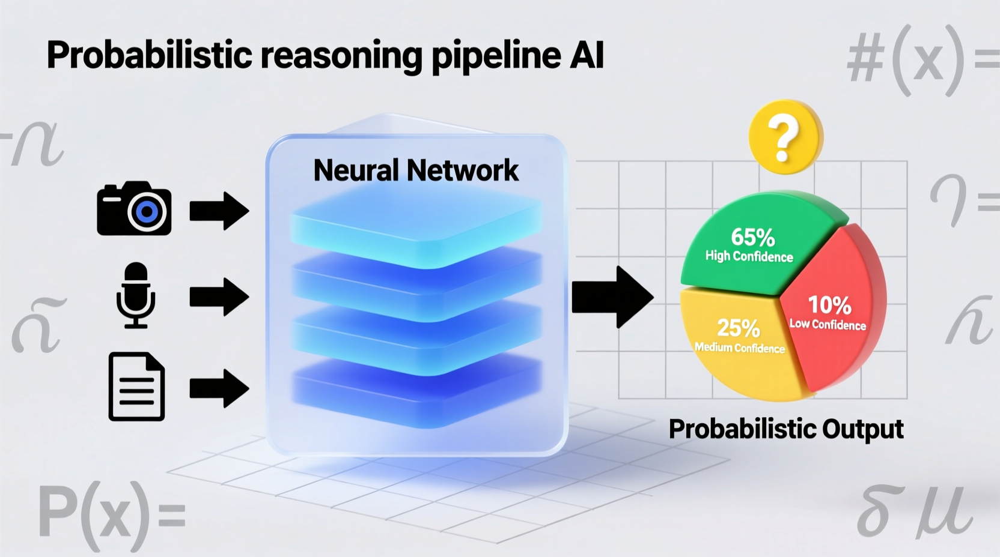
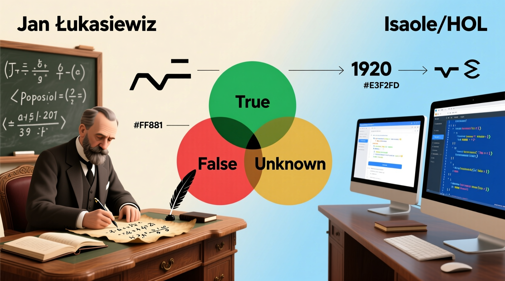
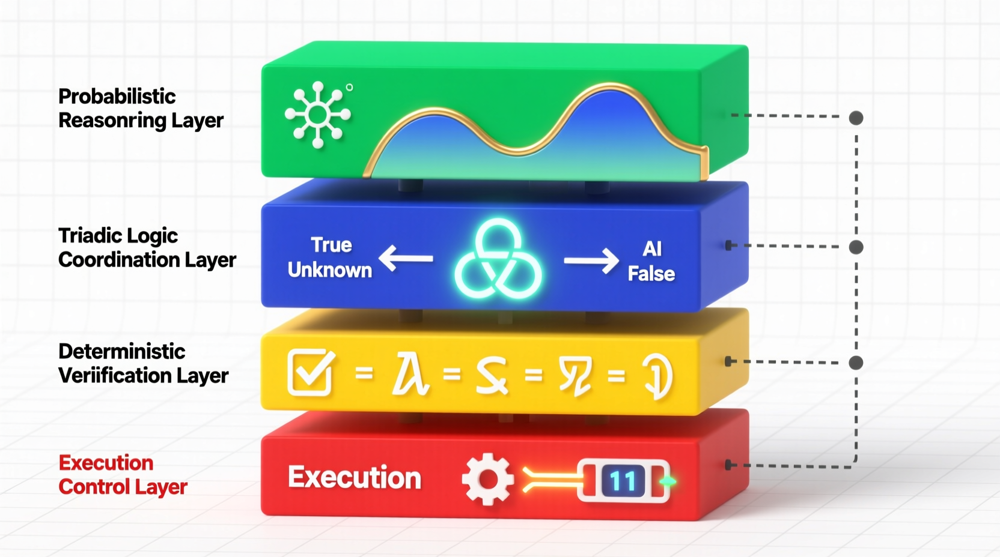

Architectural research on triadic coordination layers for artificial intelligence. This repository explores integrating a discrete third state (verification pending) between probabilistic neural generation and deterministic binary execution to resolve uncertainty in precision-critical AI decision pipelines.
The rapid expansion of artificial intelligence into critical infrastructure, financial markets, and healthcare has exposed a profound structural limitation in the foundational logic underlying automated decision-making. Historically, computational systems and formal execution gates have relied upon strict bivalent logic, restricting the final evaluation of any process to strictly true or false.
While continuous probabilistic reasoning models and Bayesian inference engines allow AI systems to process vast gradients of certainty, the execution phase of these systems almost inevitably collapses into a binary threshold.

This repository investigates the technical hypothesis that triadic logical structures can function as a crucial coordination layer. By explicitly separating epistemic ambiguity from immediate binary execution, triadic coordination layers prevent cascading errors and provide deterministic triggers for human-in-the-loop oversight.
The conceptualization of a third logical state possesses a rich theoretical lineage, tracing from Charles Sanders Peirce's Limit state to Jan Łukasiewicz's formalization of future contingents, and Stephen Kleene's logic of computational undefinedness.

The core of this repository centers on the contemporary applied evolution of these classical mathematical systems proposed by Lev Goukassian through Ternary Logic (TL) and Ternary Moral Logic (TML). These frameworks reframe the third state as an active, mandatory architectural mechanism for AI governance, utilizing the Epistemic Hold (Sacred Zero) to actively enforce a deterministic deliberative pause within the computational system.

This repository contains four core deep research reports generated to analyze the architecture, implementation, and theoretical defense of triadic decision pipelines. The artifacts are available in Markdown, HTML Web Pages, specialized Infographics, and Audio formats.
Analyzes the historical lineage from Peirce, Łukasiewicz, and Kleene to Goukassian's applied frameworks, evaluating the placement of triadic gates against existing Bayesian and abstention-based uncertainty methods.
Focuses on the deployment of triadic logic in high-stakes environments, detailing operational scenarios such as preventing flash crashes in algorithmic trading and enabling safe escalation in medical diagnostics.
Explores the structural vulnerabilities of unstructured multi-agent networks and positions the Dual-Lane Architecture as the definitive solution for containing cascading errors.
A highly technical evaluation of state transition mechanics between inference and execution, detailing the "Sacred Zero" hardware pause and cryptographic logging requirements.